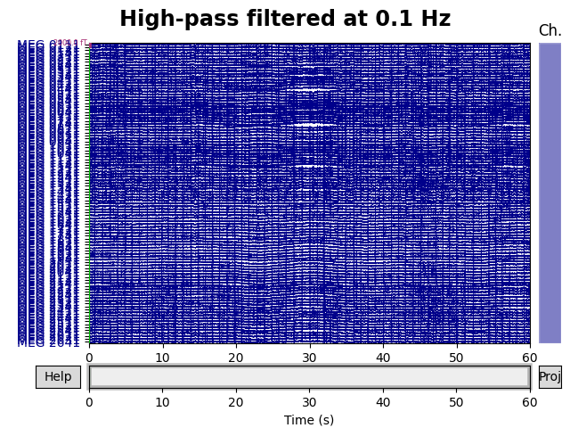
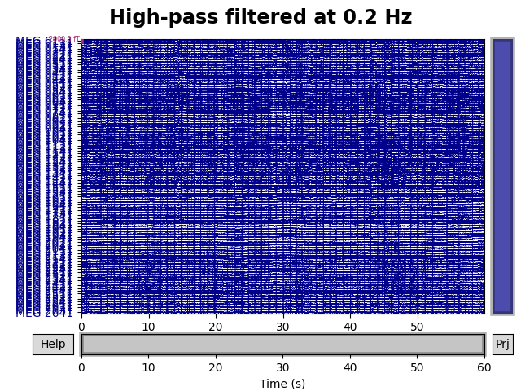
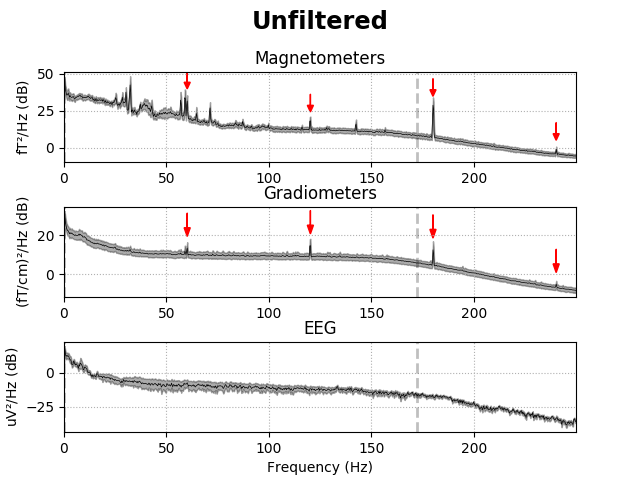
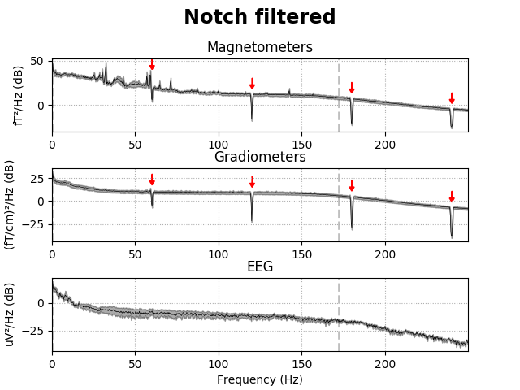
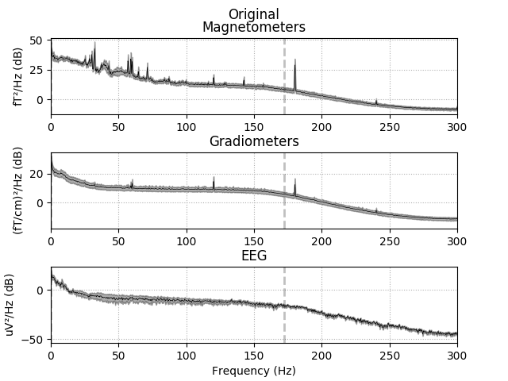
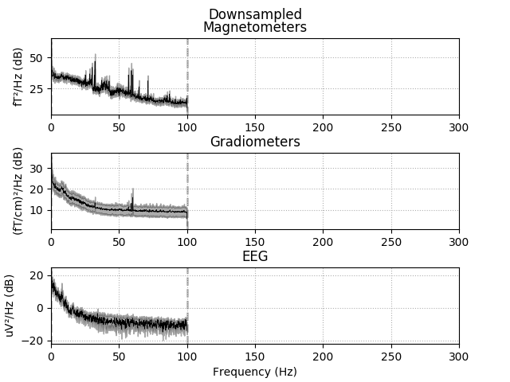
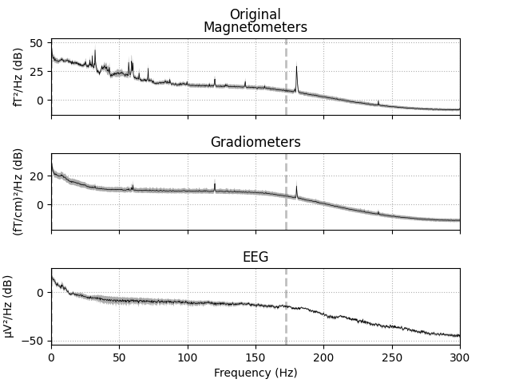
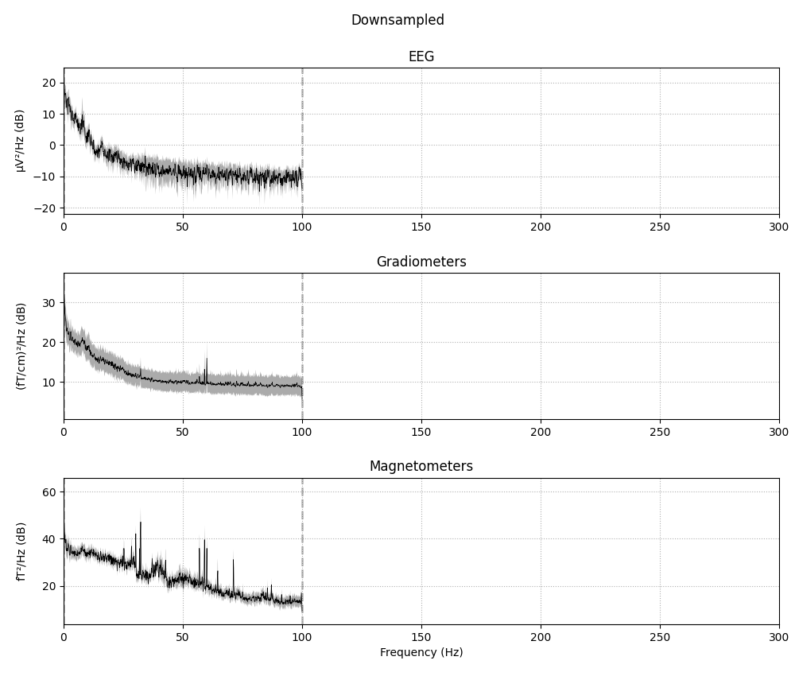

Note
Click here to download the full example code
Filtering and resampling data¶
This tutorial covers filtering and resampling, and gives examples of how filtering can be used for artifact repair.
We begin as always by importing the necessary Python modules and loading some example data. We’ll also crop the data to 60 seconds (to save memory on the documentation server):
import os
import numpy as np
import matplotlib.pyplot as plt
import mne
sample_data_folder = mne.datasets.sample.data_path()
sample_data_raw_file = os.path.join(sample_data_folder, 'MEG', 'sample',
'sample_audvis_raw.fif')
raw = mne.io.read_raw_fif(sample_data_raw_file)
raw.crop(0, 60).load_data() # use just 60 seconds of data, to save memory
Out:
Opening raw data file /home/circleci/mne_data/MNE-sample-data/MEG/sample/sample_audvis_raw.fif...
Read a total of 3 projection items:
PCA-v1 (1 x 102) idle
PCA-v2 (1 x 102) idle
PCA-v3 (1 x 102) idle
Range : 25800 ... 192599 = 42.956 ... 320.670 secs
Ready.
Reading 0 ... 36037 = 0.000 ... 60.000 secs...
Background on filtering¶
A filter removes or attenuates parts of a signal. Usually, filters act on specific frequency ranges of a signal — for example, suppressing all frequency components above or below a certain cutoff value. There are many ways of designing digital filters; see Background information on filtering for a longer discussion of the various approaches to filtering physiological signals in MNE-Python.
Repairing artifacts by filtering¶
Artifacts that are restricted to a narrow frequency range can sometimes be repaired by filtering the data. Two examples of frequency-restricted artifacts are slow drifts and power line noise. Here we illustrate how each of these can be repaired by filtering.
Slow drifts¶
Low-frequency drifts in raw data can usually be spotted by plotting a fairly
long span of data with the plot() method, though it is
helpful to disable channel-wise DC shift correction to make slow drifts
more readily visible. Here we plot 60 seconds, showing all the magnetometer
channels:
mag_channels = mne.pick_types(raw.info, meg='mag')
raw.plot(duration=60, order=mag_channels, proj=False,
n_channels=len(mag_channels), remove_dc=False)
A half-period of this slow drift appears to last around 10 seconds, so a full period would be 20 seconds, i.e., \(\frac{1}{20} \mathrm{Hz}\). To be sure those components are excluded, we want our highpass to be higher than that, so let’s try \(\frac{1}{10} \mathrm{Hz}\) and \(\frac{1}{5} \mathrm{Hz}\) filters to see which works best:
for cutoff in (0.1, 0.2):
raw_highpass = raw.copy().filter(l_freq=cutoff, h_freq=None)
fig = raw_highpass.plot(duration=60, order=mag_channels, proj=False,
n_channels=len(mag_channels), remove_dc=False)
fig.subplots_adjust(top=0.9)
fig.suptitle('High-pass filtered at {} Hz'.format(cutoff), size='xx-large',
weight='bold')
- 
- 
Out:
Filtering raw data in 1 contiguous segment
Setting up high-pass filter at 0.1 Hz
FIR filter parameters
---------------------
Designing a one-pass, zero-phase, non-causal highpass filter:
- Windowed time-domain design (firwin) method
- Hamming window with 0.0194 passband ripple and 53 dB stopband attenuation
- Lower passband edge: 0.10
- Lower transition bandwidth: 0.10 Hz (-6 dB cutoff frequency: 0.05 Hz)
- Filter length: 19821 samples (33.001 sec)
Filtering raw data in 1 contiguous segment
Setting up high-pass filter at 0.2 Hz
FIR filter parameters
---------------------
Designing a one-pass, zero-phase, non-causal highpass filter:
- Windowed time-domain design (firwin) method
- Hamming window with 0.0194 passband ripple and 53 dB stopband attenuation
- Lower passband edge: 0.20
- Lower transition bandwidth: 0.20 Hz (-6 dB cutoff frequency: 0.10 Hz)
- Filter length: 9911 samples (16.501 sec)
Looks like 0.1 Hz was not quite high enough to fully remove the slow drifts.
Notice that the text output summarizes the relevant characteristics of the
filter that was created. If you want to visualize the filter, you can pass
the same arguments used in the call to raw.filter() above to the function mne.filter.create_filter()
to get the filter parameters, and then pass the filter parameters to
mne.viz.plot_filter(). create_filter() also requires
parameters data (a NumPy array) and sfreq
(the sampling frequency of the data), so we’ll extract those from our
Raw object:
filter_params = mne.filter.create_filter(raw.get_data(), raw.info['sfreq'],
l_freq=0.2, h_freq=None)
Out:
Setting up high-pass filter at 0.2 Hz
FIR filter parameters
---------------------
Designing a one-pass, zero-phase, non-causal highpass filter:
- Windowed time-domain design (firwin) method
- Hamming window with 0.0194 passband ripple and 53 dB stopband attenuation
- Lower passband edge: 0.20
- Lower transition bandwidth: 0.20 Hz (-6 dB cutoff frequency: 0.10 Hz)
- Filter length: 9911 samples (16.501 sec)
Notice that the output is the same as when we applied this filter to the data
using raw.filter(). You can now pass the filter
parameters (and the sampling frequency) to plot_filter() to
plot the filter:
mne.viz.plot_filter(filter_params, raw.info['sfreq'], flim=(0.01, 5))
Power line noise¶
Power line noise is an environmental artifact that manifests as persistent
oscillations centered around the AC power line frequency. Power line
artifacts are easiest to see on plots of the spectrum, so we’ll use
plot_psd() to illustrate. We’ll also write a little
function that adds arrows to the spectrum plot to highlight the artifacts:
def add_arrows(axes):
# add some arrows at 60 Hz and its harmonics
for ax in axes:
freqs = ax.lines[-1].get_xdata()
psds = ax.lines[-1].get_ydata()
for freq in (60, 120, 180, 240):
idx = np.searchsorted(freqs, freq)
# get ymax of a small region around the freq. of interest
y = psds[(idx - 4):(idx + 5)].max()
ax.arrow(x=freqs[idx], y=y + 18, dx=0, dy=-12, color='red',
width=0.1, head_width=3, length_includes_head=True)
fig = raw.plot_psd(fmax=250, average=True)
add_arrows(fig.axes[:2])
Out:
Effective window size : 3.410 (s)
Effective window size : 3.410 (s)
Effective window size : 3.410 (s)
It should be evident that MEG channels are more susceptible to this kind of
interference than EEG that is recorded in the magnetically shielded room.
Removing power-line noise can be done with a notch filter,
applied directly to the Raw object, specifying an array of
frequencies to be attenuated. Since the EEG channels are relatively
unaffected by the power line noise, we’ll also specify a picks argument
so that only the magnetometers and gradiometers get filtered:
meg_picks = mne.pick_types(raw.info, meg=True)
freqs = (60, 120, 180, 240)
raw_notch = raw.copy().notch_filter(freqs=freqs, picks=meg_picks)
for title, data in zip(['Un', 'Notch '], [raw, raw_notch]):
fig = data.plot_psd(fmax=250, average=True)
fig.subplots_adjust(top=0.85)
fig.suptitle('{}filtered'.format(title), size='xx-large', weight='bold')
add_arrows(fig.axes[:2])
- 
- 
Out:
Setting up band-stop filter
FIR filter parameters
---------------------
Designing a one-pass, zero-phase, non-causal bandstop filter:
- Windowed time-domain design (firwin) method
- Hamming window with 0.0194 passband ripple and 53 dB stopband attenuation
- Lower transition bandwidth: 0.50 Hz
- Upper transition bandwidth: 0.50 Hz
- Filter length: 3965 samples (6.602 sec)
Effective window size : 3.410 (s)
Effective window size : 3.410 (s)
Effective window size : 3.410 (s)
Effective window size : 3.410 (s)
Effective window size : 3.410 (s)
Effective window size : 3.410 (s)
notch_filter() also has parameters to control the notch
width, transition bandwidth and other aspects of the filter. See the
docstring for details.
It’s also possible to try to use a spectrum fitting routine to notch filter. In principle it can automatically detect the frequencies to notch, but our implementation generally does not do so reliably, so we specify the frequencies to remove instead, and it does a good job of removing the line noise at those frequencies:
raw_notch_fit = raw.copy().notch_filter(
freqs=freqs, picks=meg_picks, method='spectrum_fit', filter_length='10s')
for title, data in zip(['Un', 'spectrum_fit '], [raw, raw_notch_fit]):
fig = data.plot_psd(fmax=250, average=True)
fig.subplots_adjust(top=0.85)
fig.suptitle('{}filtered'.format(title), size='xx-large', weight='bold')
add_arrows(fig.axes[:2])
- 
- 
Out:
Removed notch frequencies (Hz):
60.00 : 3355 windows
120.00 : 3355 windows
180.00 : 3355 windows
239.00 : 3355 windows
240.00 : 3355 windows
241.00 : 3355 windows
Effective window size : 3.410 (s)
Effective window size : 3.410 (s)
Effective window size : 3.410 (s)
Effective window size : 3.410 (s)
Effective window size : 3.410 (s)
Effective window size : 3.410 (s)
Resampling¶
EEG and MEG recordings are notable for their high temporal precision, and are often recorded with sampling rates around 1000 Hz or higher. This is good when precise timing of events is important to the experimental design or analysis plan, but also consumes more memory and computational resources when processing the data. In cases where high-frequency components of the signal are not of interest and precise timing is not needed (e.g., computing EOG or ECG projectors on a long recording), downsampling the signal can be a useful time-saver.
In MNE-Python, the resampling methods (raw.resample(), epochs.resample() and
evoked.resample()) apply a low-pass filter to
the signal to avoid aliasing, so you don’t need to explicitly filter it
yourself first. This built-in filtering that happens when using
raw.resample(), epochs.resample(), or evoked.resample() is
a brick-wall filter applied in the frequency domain at the Nyquist
frequency of the desired new sampling rate. This can be clearly seen in the
PSD plot, where a dashed vertical line indicates the filter cutoff; the
original data had an existing lowpass at around 172 Hz (see
raw.info['lowpass']), and the data resampled from 600 Hz to 200 Hz gets
automatically lowpass filtered at 100 Hz (the Nyquist frequency for a
target rate of 200 Hz):
raw_downsampled = raw.copy().resample(sfreq=200)
for data, title in zip([raw, raw_downsampled], ['Original', 'Downsampled']):
fig = data.plot_psd(average=True)
fig.subplots_adjust(top=0.9)
fig.suptitle(title)
plt.setp(fig.axes, xlim=(0, 300))
- 
- 
Out:
86 events found
Event IDs: [ 1 2 3 4 5 32]
86 events found
Event IDs: [ 1 2 3 4 5 32]
Effective window size : 3.410 (s)
Effective window size : 3.410 (s)
Effective window size : 3.410 (s)
Effective window size : 10.240 (s)
Effective window size : 10.240 (s)
Effective window size : 10.240 (s)
Because resampling involves filtering, there are some pitfalls to resampling at different points in the analysis stream:
Performing resampling on
Rawdata (before epoching) will negatively affect the temporal precision of Event arrays, by causing jitter in the event timing. This reduced temporal precision will propagate to subsequent epoching operations.Performing resampling after epoching can introduce edge artifacts on every epoch, whereas filtering the
Rawobject will only introduce artifacts at the start and end of the recording (which is often far enough from the first and last epochs to have no affect on the analysis).
The following section suggests best practices to mitigate both of these issues.
Best practices¶
To avoid the reduction in temporal precision of events that comes with
resampling a Raw object, and also avoid the edge artifacts
that come with filtering an Epochs or Evoked
object, the best practice is to:
low-pass filter the
Rawdata at or below \(\frac{1}{3}\) of the desired sample rate, thendecimate the data after epoching, by either passing the
decimparameter to theEpochsconstructor, or using thedecimate()method after theEpochshave been created.
Warning
The recommendation for setting the low-pass corner frequency at
\(\frac{1}{3}\) of the desired sample rate is a fairly safe rule of
thumb based on the default settings in raw.filter() (which are different from the filter settings used
inside the raw.resample() method). If you
use a customized lowpass filter (specifically, if your transition
bandwidth is wider than 0.5× the lowpass cutoff), downsampling to 3× the
lowpass cutoff may still not be enough to avoid aliasing, and
MNE-Python will not warn you about it (because the raw.info object only keeps track of the lowpass cutoff, not the
transition bandwidth). Conversely, if you use a steeper filter, the
warning may be too sensitive. If you are unsure, plot the PSD of your
filtered data before decimating and ensure that there is no content in
the frequencies above the Nyquist frequency of the sample rate you’ll
end up with after decimation.
Note that this method of manually filtering and decimating is exact only when the original sampling frequency is an integer multiple of the desired new sampling frequency. Since the sampling frequency of our example data is 600.614990234375 Hz, ending up with a specific sampling frequency like (say) 90 Hz will not be possible:
current_sfreq = raw.info['sfreq']
desired_sfreq = 90 # Hz
decim = np.round(current_sfreq / desired_sfreq).astype(int)
obtained_sfreq = current_sfreq / decim
lowpass_freq = obtained_sfreq / 3.
raw_filtered = raw.copy().filter(l_freq=None, h_freq=lowpass_freq)
events = mne.find_events(raw_filtered)
epochs = mne.Epochs(raw_filtered, events, decim=decim)
print('desired sampling frequency was {} Hz; decim factor of {} yielded an '
'actual sampling frequency of {} Hz.'
.format(desired_sfreq, decim, epochs.info['sfreq']))
Out:
Filtering raw data in 1 contiguous segment
Setting up low-pass filter at 29 Hz
FIR filter parameters
---------------------
Designing a one-pass, zero-phase, non-causal lowpass filter:
- Windowed time-domain design (firwin) method
- Hamming window with 0.0194 passband ripple and 53 dB stopband attenuation
- Upper passband edge: 28.60 Hz
- Upper transition bandwidth: 7.15 Hz (-6 dB cutoff frequency: 32.18 Hz)
- Filter length: 279 samples (0.465 sec)
86 events found
Event IDs: [ 1 2 3 4 5 32]
Not setting metadata
Not setting metadata
86 matching events found
Setting baseline interval to [-0.19813025304873463, 0.0] sec
Applying baseline correction (mode: mean)
Created an SSP operator (subspace dimension = 3)
3 projection items activated
desired sampling frequency was 90 Hz; decim factor of 7 yielded an actual sampling frequency of 85.80214146205357 Hz.
If for some reason you cannot follow the above-recommended best practices, you should at the very least either:
resample the data after epoching, and make your epochs long enough that edge effects from the filtering do not affect the temporal span of the epoch that you hope to analyze / interpret; or
perform resampling on the
Rawobject and its corresponding Events array simultaneously so that they stay more or less in synch. This can be done by passing the Events array as theeventsparameter toraw.resample().
Total running time of the script: ( 1 minutes 7.890 seconds)
Estimated memory usage: 996 MB